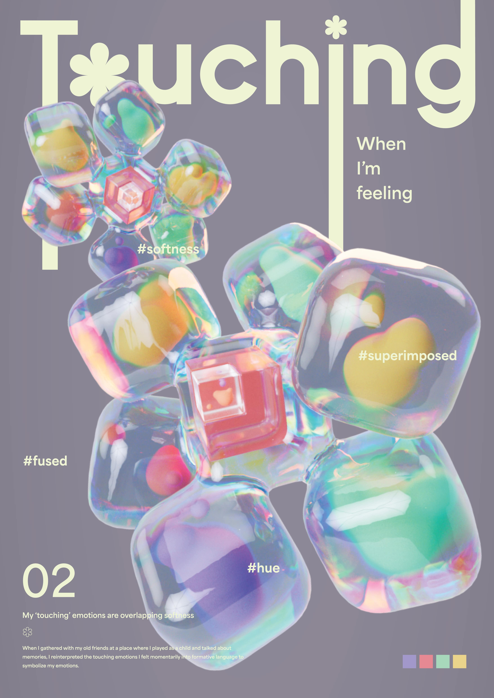
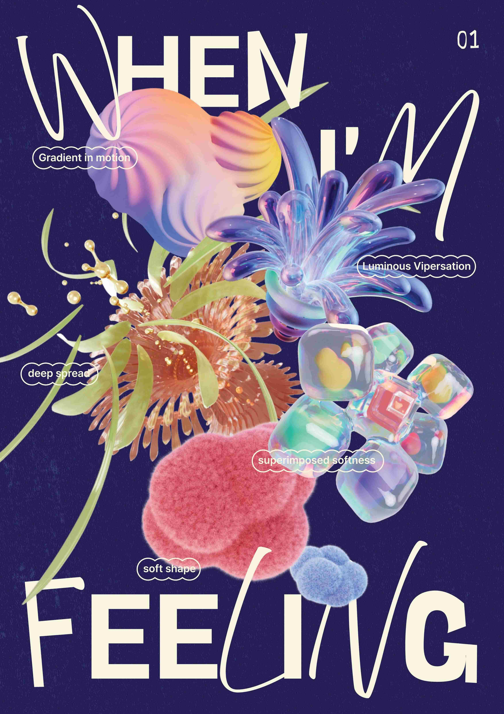
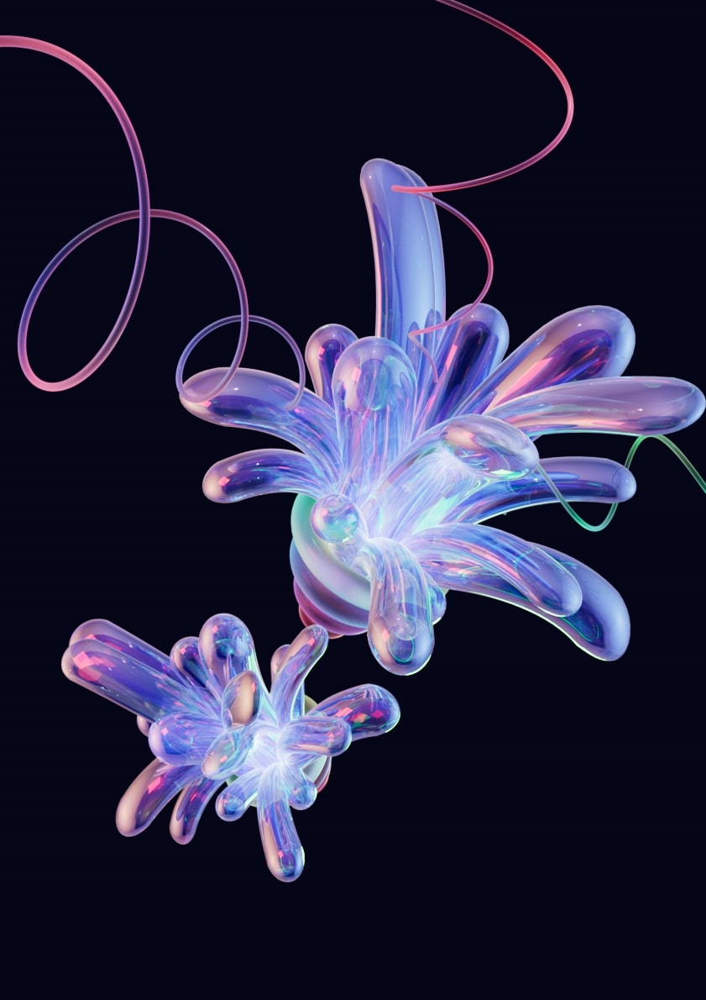
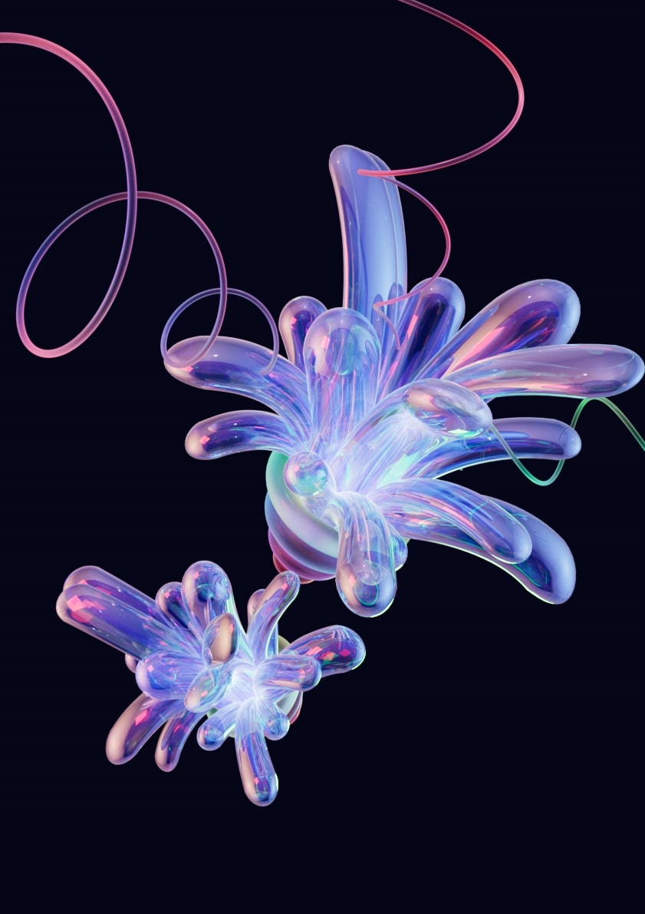

When I'm Feeling 💭
나의 ‘좋음’ 문장을 바탕으로 조형 언어 사전을 활용하여 키워드를
추출한 뒤 각자의 조형으로 형상화하였습니다.
감동적임
| 깊은 확산
설레임 | 운동하는 그라데이션
따뜻함 |
부드러운 모양
뭉클함 | 중첩된 부드러움
뿌듯함 |
발광하며 상승하는 바이퍼케이션




 


모션그래픽스모델링 | 개인 작업
24.03 - 24.04